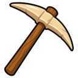
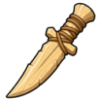
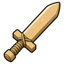
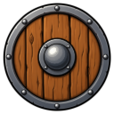
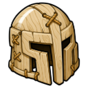
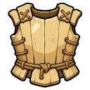
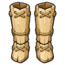
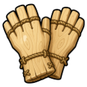
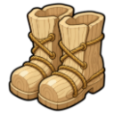
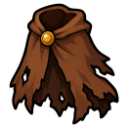

Starter Chest
Chest
| Property | Value |
|---|---|
| Stacks | No |
Contains
Every new character gets one.
 Fishing Net
Fishing Net
Wooden Pickaxe Bronze Axe
Bronze Axe Fletching Knife
Fletching Knife
Wooden Dagger
Wooden Sword
Wooden Shield
Wooden Full Helmet
Wooden Chestbody
Wooden Legs
Wooden Gloves
Wooden Boots
Tattered Cape Shrimp ×10
Shrimp ×10- 🪙 50 coins